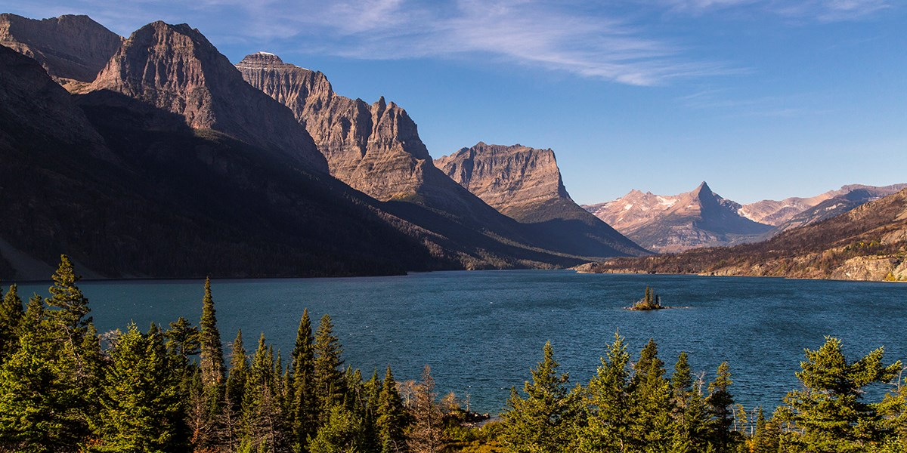

Glaciers are giant masses of ice that have so much mass from piled up snow and ice that they begin to move across the land, being drug along by their own weight. They are responsible for about 70 percent of the world's fresh water.
Iceflows and glaciers are responsible for many of the world's naturally made lakes and valleys. During the ice age many millenia ago, moving glaciers moved across the land and tore up ground behind them, leaving valleys and plateaus in their wake.
Many notable landmarks in America are also a result of the movement of glaciers durng the ice age, or the melting of glaciers as that period drew to a close. Examples include the Great Lakes, the grand canyon, and the Glacier National Park in Montana.
